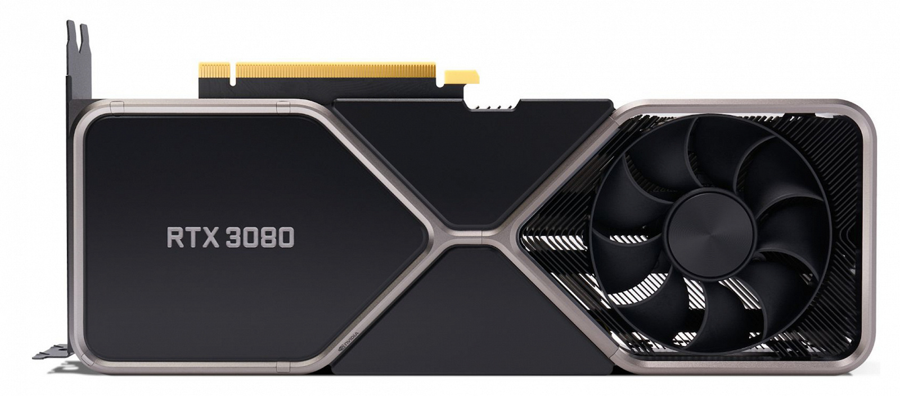
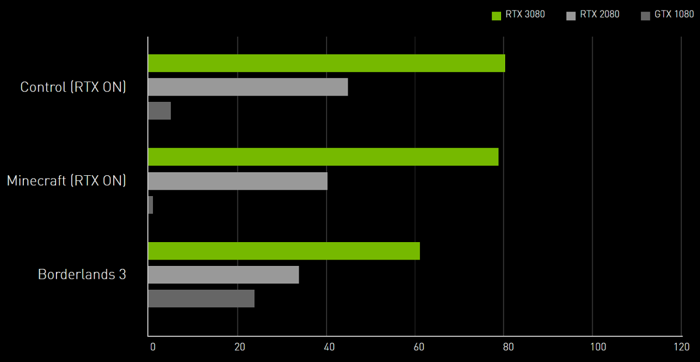
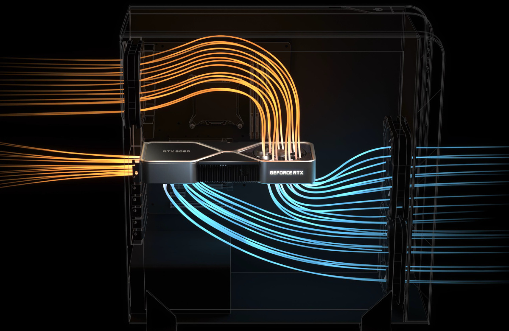

Видеокарта NVIDIA GeForce RTX 3080 Founders Edition 10GB GDDR6X
Описание
Видеокарта GeForce RTX 3080 обеспечивает рекордную производительность для геймеров,
работая на базе Ampere — архитектуры NVIDIA RTX второго поколения.
Она оснащена улучшенными ядрами RT и тензорными ядрами,
новыми потоковыми мультипроцессорами и высокоскоростной памятью G6X для потрясающих игровых возможностей.

Характеристика товара
NVIDIA GeForce RTX 3080, базовая частота 1440 МГц, Turbo-частота 1710 МГц, 8704sp, частота памяти 19000 МГц, 320 бит, доп. питание: 8+8 pin, 2 слота, HDMI, DisplayPort
Подробное описание
Основные
- Интерфейс PCI Express x16 4.0
- Производитель графического процессора NVIDIA
- Графический процессор GeForce RTX 3080
- Технические характеристики
- Частота графического процессора 1 440 МГц
- Turbo-частота графического процессора 1 710 МГц
- Количество потоковых процессоров8 704
- Видеопамять10 ГБ
- Тип видеопамятиGDDR6X
- Эффективная частота памяти 19 000 МГц
- Пропускная способность памяти 760 ГБ/с
- Ширина шины памяти 320 бит
- Поддержка DirectX 12 Ultimate
- Разъёмы питания8+8 pin
- Рекомендуемый блок питания 750 Вт
- Охлаждение активное
- Толщина системы охлаждения 2 слота
- Количество вентиляторов 2
- Длина видеокарты 285 мм
- Высота видеокарты 112 мм
Интерфейсы
- HDMI
- DisplayPort
Сравнение с другими видеокартами

Процесс воздухообмена

{kind=link}